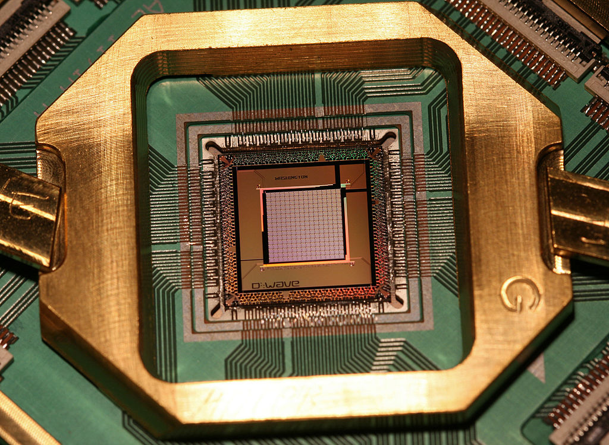
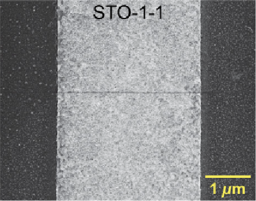
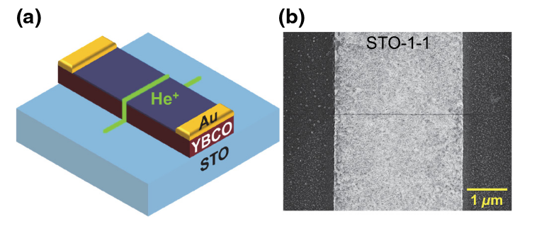
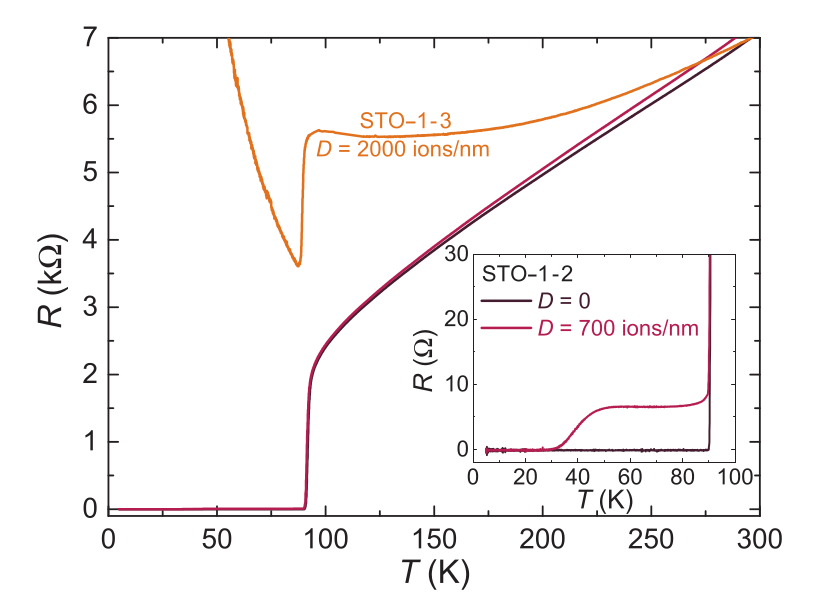
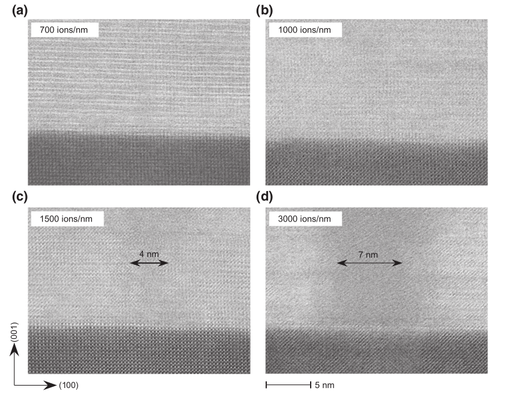
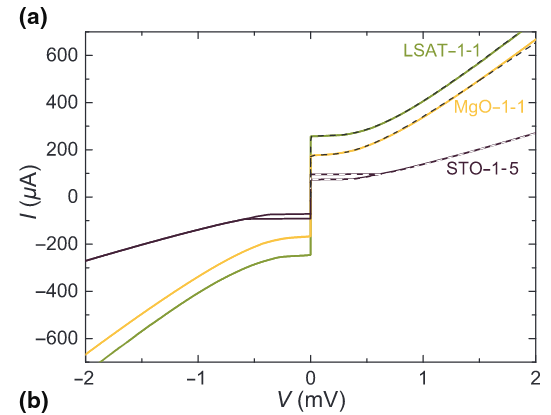
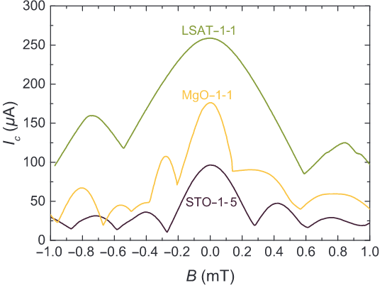
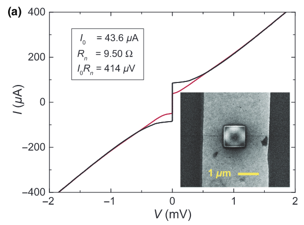
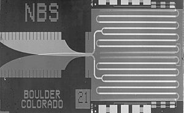

<!DOCTYPE html>
<html lang="en">
  <head>
    <meta charset="utf-8" />
    <meta name="viewport" content="width=device-width, initial-scale=1.0, maximum-scale=1.0, user-scalable=no" />

    <title>Josephson Junctions</title>
    <link rel="shortcut icon" href="./favicon.ico" />
    <link rel="stylesheet" href="./dist/reset.css" />
    <link rel="stylesheet" href="./dist/reveal.css" />
    <link rel="stylesheet" href="./dist/theme/night.css" id="theme" />
    <link rel="stylesheet" href="./css/highlight/base16/zenburn.css" />


  </head>
  <body>
    <div class="reveal">
      <div class="slides"><section  data-markdown><script type="text/template">


### Josephson Junctions



Colin Burdine |  ELC 5396

</script></section><section ><section data-markdown><script type="text/template">

### Superconductors

</script></section><section data-markdown><script type="text/template">

Two key properties of superconductors:

* Electrical resistance drops to $0 \Omega$ when the material is cooled beneath a critical temperature $T_c$.

* Magnetic fields are also expelled within the bulk of the material for $T < T_c$ (Meissner Effect)


The value of $T_c$ is specific to each superconductor.
</script></section><section data-markdown><script type="text/template">

Superconductivity is a quantum mechanical phenomenon explained (mostly) by _BCS theory_:

* Electrical resistance in a conductor is primarily due to electrons scattering off positively charged nuclei.<!-- .element: class="fragment" -->

* Phonon-mediated pairing of the electrons allows for condensation into a state with "collective energy".<!-- .element: class="fragment" -->

* The correlated states of these paired electrons allow for the flow of current without resistance.<!-- .element: class="fragment" -->

</script></section><section data-markdown><script type="text/template">

### The Meissner Effect

<iframe width="560" height="315" src="https://www.youtube.com/embed/4lE8QWtrEvQ" title="YouTube video player" frameborder="0" allow="accelerometer; autoplay; clipboard-write; encrypted-media; gyroscope; picture-in-picture; web-share" allowfullscreen></iframe>

</script></section></section><section ><section data-markdown><script type="text/template">

### Josephson Junctions

</script></section><section data-markdown><script type="text/template">

Josephson Junctions are formed by placing an insulating barrier between two superconducting materials:



</script></section><section data-markdown><script type="text/template">

### I-V characteristics

The electron wave functions on both sides of the junction $(\psi_A, \psi_B)$ satisfy the equation:

$$i\hbar \dfrac{\partial }{\partial t} \begin{pmatrix}
\psi_A \\\\ \psi_B
\end{pmatrix} = \begin{pmatrix}
eV & \kappa \\\\ \kappa & -eV
\end{pmatrix} \begin{pmatrix}
\psi_A \\\\ \psi_B
\end{pmatrix}$$

* $V$ is the applied voltage
* $\psi_{A/B} = \sqrt{n_{A/B}}e^{i\phi_{A/B}}$
* $\kappa$ is the junction characteristic.

</script></section><section data-markdown><script type="text/template">

Solving the previous system for the current, we obtain the _Josephson equations_:

$$I = I_c\sin(\theta),\qquad \dfrac{d\theta}{dt} = \frac{2eV(t)}{\hbar}$$

* $\theta = \phi_B - \phi_A$ is the junction's quantum phase.<!-- .element: class="fragment" -->

* At $V = 0$, the current $I$ is constant and depends on the value of $\theta$.<!-- .element: class="fragment" -->

</script></section></section><section ><section data-markdown><script type="text/template">

### High-$T_c$ Josephson Junctions

</script></section><section data-markdown><script type="text/template">

* Many superconductors have $T_c < 40$K, which require cost-prohibitive cooling systems.<!-- .element: class="fragment" -->

* Unconventional superconductors, such as YBa$_2$Cu$_3$O$_7$ (YBCO) can have $T_c > 100$K, making them ideal for higher temperature devices. <!-- .element: class="fragment" -->

* YBCO slabs can be "grown" on a substrate, but constructing nm-scale junctions is difficult.<!-- .element: class="fragment" -->

</script></section><section data-markdown><script type="text/template">

A solution explored by Muller et al [1] uses a beam of He$^+$ ions to etch insulating barriers into YBCO.



</script></section><section data-markdown><script type="text/template">

By controlling the beam width and ion dosage, the width of a Josephson Junction (which controls $\kappa$) can be adjusted:



</script></section><section data-markdown><script type="text/template">



</script></section><section data-markdown><script type="text/template">

Muller et al. also measured the I-V and I-B characteristics of the YBCO junction:



</script></section><section data-markdown><script type="text/template">

Using this same technique, Muller et al. also fabricated a Superconducting Quantum Interference Device (SQUID):



</script></section></section><section ><section data-markdown><script type="text/template">

### Quantum Metrology and Computing:

</script></section><section data-markdown><script type="text/template">

The Josephson equations show that JJs produce a constant voltage from very high alternating currents:



$$I = I_c\sin(\theta),\qquad \frac{d\theta}{dt} = \frac{2eV(t)}{\hbar}$$

</script></section><section data-markdown><script type="text/template">

The TwoX _Washington_ quantum computing processor by DWave Systems uses over 100,000
Josephson junctions to perform quantum annealing computations.


</script></section></section><section ><section data-markdown><script type="text/template">

# Questions

</script></section><section data-markdown><script type="text/template">

### References

* [1] B. Müller, M. Karrer, F. Limberger, M. Becker, B. Schröppel, C.J. Burkhardt, R. Kleiner,
E. Goldobin, and D. Koelle. Josephson Junctions and SQUIDs Created by Focused
Helium-Ion-Beam Irradiation of YBa2Cu3O7. Phys. Rev. Appl., 11(4):044082, April 2019. Publisher: American Physical Society.

</script></section></section></div>
    </div>

    <script src="./dist/reveal.js"></script>

    <script src="./plugin/markdown/markdown.js"></script>
    <script src="./plugin/highlight/highlight.js"></script>
    <script src="./plugin/zoom/zoom.js"></script>
    <script src="./plugin/notes/notes.js"></script>
    <script src="./plugin/math/math.js"></script>
    <script>
      function extend() {
        var target = {};
        for (var i = 0; i < arguments.length; i++) {
          var source = arguments[i];
          for (var key in source) {
            if (source.hasOwnProperty(key)) {
              target[key] = source[key];
            }
          }
        }
        return target;
      }

      // default options to init reveal.js
      var defaultOptions = {
        controls: true,
        progress: true,
        history: true,
        center: true,
        transition: 'default', // none/fade/slide/convex/concave/zoom
        slideNumber: true,
        plugins: [
          RevealMarkdown,
          RevealHighlight,
          RevealZoom,
          RevealNotes,
          RevealMath
        ]
      };

      // options from URL query string
      var queryOptions = Reveal().getQueryHash() || {};

      var options = extend(defaultOptions, {"transition":"fade"}, queryOptions);
    </script>


    <script>
      Reveal.initialize(options);
    </script>
  </body>
</html>
